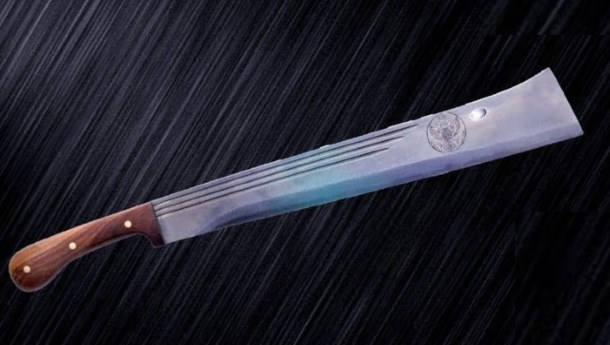

pan
{kind=link}
A cast-iron pan purposely built for cooking up hate for your enemies. In the game, the pan is capable of killing an unarmored opponent in two hits on the body or one hit to the head. The pan will also block bullets fired at players while equipped and while unequipped, allowing it to act as a small shield. It blocks shots from all ranged weapons in the game, including shotguns and the AWM. For these reasons, it is regarded as the best melee weapon in the game.
sickle
{kind=link}
A sickle is a melee weapon consisting of a long wooden rod with a sharp metal part on it. The weapon is highly effective against unarmed opponents and is relatively easy to find.
machete

{kind=link}
The tapanga machete is a long and sharp metal object with a wooden handle used in game as a melee weapon that is exclusively useful against unarmed and unarmored opponents, as it is capable of taking a person without armor down in one hit.
crowbar

Commonly used to pry objects apart, pull out nails, or swing at an assailant. It does a fair amount of damage, but the slow swing speed and overall poor melee mechanics as a whole make this weapon a last resort when all else has failed.
crossbow

The crossbow is a short to medium ranged weapon. It does very high damage, with a shot to the torso capable of killing an unarmored enemy in one shot and headshots being instant kills, even through Spetsnaz helmets. It is also completely silent, allowing for stealthy kills. It suffers from heavy drop, thus, medium to long range shots need to be aimed relatively high to hit a player, however it does come with a reflex sight with a unique reticle that can be used as a rangefinder, with markings for 50, 100, and 200 meter targets. Its reload time is also painfully slow and while the quiver can reduce this time, it necessitates the need for an opportunistic play style when using this weapon. Being completely silent however, this can be a viable weapon when there are only a few players left, especially in foggy weather.